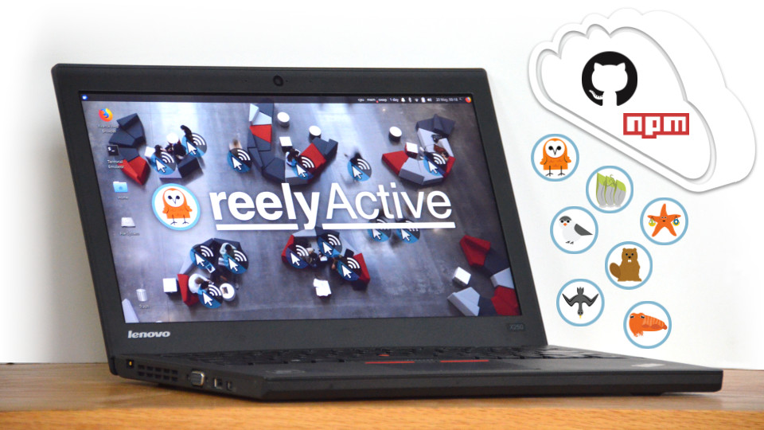

Install our open source software suite on a laptop
Our step-by-step guide to run reelyActive's open source software suite on a laptop or personal computer.
The TL;DR (Too Long; Didn't Read)
Learn how we at reelyActive deploy our software suite on a laptop or personal computer.
- What will this accomplish?
- The laptop will accept data from IoT/RFID hardware, providing a comprehensive suite of interactive web applications and APIs.
- Is there an easier way?
- Ask us for a quote to prepare a laptop for you as part of a PoC.
- Does this apply only to a laptop?
- The instructions are equally applicable to any computer/server, although we do have a tutorial specific to the Raspberry Pi.
Prerequisites
A laptop or computer. Consider the following tutorial if preparing a dedicated computer from scratch.
-

[Optional] Prepare a reelyActive laptop from scratch
Our step-by-step guide to prepare a laptop with the minimum prerequisites for our open source software.
Installing Node.js, npm and git Step 1 of 3
Install all the prerequisites for the reelyActive open source software.
- Why install Node.js?
- The reelyActive open source software runs on Node.js.
- Why install git?
- Because nothing says "I ♥ Open Source Software" quite like git.

Download and install Node.js and npm Part 1
Check first if node and npm are already installed by running node --version and npm --version from the command line .
From the laptop , browse to nodejs.org and note the latest LTS version number available (ex: 10.15.3). Substitute this version number in all of the commands below.
- Change to the home folder with the command
cd - Download the Node.js tarball with the command
wget https://nodejs.org/dist/v10.15.3/node-v10.15.3-linux-x64.tar.xz - Unpack with the command
tar -xf node-v10.15.3-linux-x64.tar.xz - Move the unpacked folder to /usr/local/node with the command
sudo mv node-v10.15.3-linux-x64 /usr/local/node - Remove the original download with the command
rm node-v10.15.3-linux-x64.tar.xz - Change to the /usr/local/bin folder with the command
cd /usr/local/bin - Create here a symbolic link to node with the command
sudo ln -s /usr/local/node/bin/node node - Create here a symbolic link to npm with the command
sudo ln -s /usr/local/node/bin/npm npm
Confirm that node and npm are successfully installed with the commands node --version and npm --version respectively.
From the laptop , browse to nodejs.org and follow the friendly instructions to download and install the latest LTS version for Mac.
From the laptop , browse to nodejs.org and follow the friendly instructions to download and install the latest LTS version for Windows.
Install git Part 2
Check first if git is already installed by running git --version from the command line .
From the laptop , open a terminal and install git with the command sudo apt-get install git-all
Consult the official git Getting Started Guide for more details, including instructions for non-Debian based Linux distributions.
The easiest way to install git is to install the Xcode Command Line Tools with which it is bundled. Open a terminal on the laptop and run git to start the installation.
Consult the official git Getting Started Guide for more details.
From the laptop , browse to git-scm.com/download/win to download and then execute the git installer.
Consult the official git Getting Started Guide for more details.
Node , npm and git are now installed!
Installing hlc-server Step 2 of 3
Clone our hlc-server repository on GitHub and install all dependencies using npm.
- What's hlc-server?
- It's a software package that combines all the core components of the reelyActive open source stack.
- What does hlc stand for?
- HyperLocal Context.
Create a reelyActive folder Part 1
From the laptop , open a terminal and create a reelyActive folder under the home folder as follows ( Windows users can instead complete this step using Windows Explorer).
- Change to the home folder with the command
cd - Create (if it does not already exist) a reelyActive folder with the command
mkdir reelyActive - Change to the reelyActive folder with the command
cd reelyActive
Install the software and dependencies Part 2
From the terminal , in the reelyActive folder, install the hlc-server software as follows.
- Clone the hlc-server repository from our GitHub with the command
git clone https://github.com/reelyactive/hlc-server.git - Change to the hlc-server folder with the command
cd hlc-server - Install all package dependencies from npm with the command
npm install1 min
Run hlc-server Part 3
From the terminal , in the hlc-server folder, run the software as follows.
- Run the hlc-server with the command
npm start - Point a web browser to localhost:3001 to observe the hlc-server web interface.
The reelyActive open source software suite is now installed.
Running as a systemd service Step 3 of 3
Configure the software to run as a service each time the laptop boots. ( Linux only)
- Why systemd?
- It is becoming the de facto standard for system and service management among Linux distributions.
- Why run on boot?
- For convenience of course!
This optional step applies only to Linux systems.
Enable the hlc-server service Part 1
From the same terminal , and from the hlc-server folder, configure systemd to run the hlc-server service by completing the following:
- Copy the unit file to the systemd system folder with the command
sudo cp units/hlc-server.service /lib/systemd/system - Edit the copied file, updating, in both places, the username to that of the corresponding laptop user
- Enable the hlc-server service with the command
sudo systemctl enable hlc-server.service - Browse again to localhost:3001
Observe the hlc-server landing page.
Confirm that hlc-server runs on boot Part 2
Reboot the laptop and confirm that the hlc-server landing page is indeed once again served at localhost:3001.
If necessary, it is possible to disable the service with the command sudo systemctl disable hlc-server.service.
Embrace the ambient data in your space
Pareto Anywhere is open source software that runs anywhere to digitally transform any space.
Where to next?
Continue exploring our open architecture and all its applications.
-

Create a WLAN of Owl-in-Ones and a laptop
Our step-by-step guide to create a local wireless network by configuring an Owl-in-One as an access point. -

diyActive Home
The home for reelyActive developers.